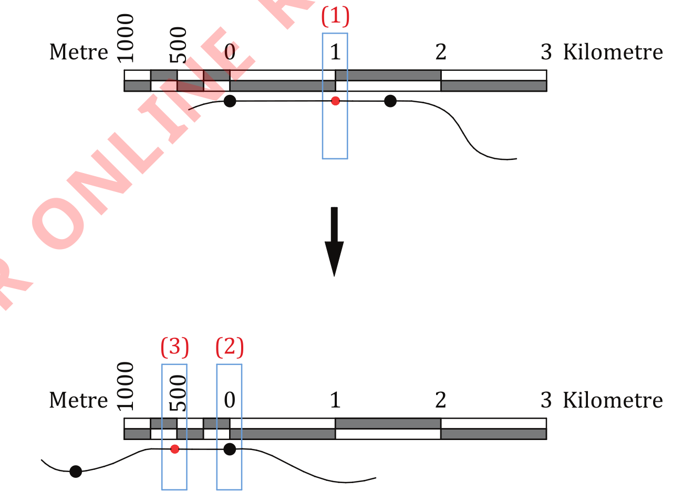

Stretch the thread and lay it along the linear scale with the first knot on zero (0) and the second knot on the right side of the scale;
if the second knot aligns with a certain number on the linear scale, that number represents the real ground distance between the two points;
if the second knot is between two numbers, record the left number and mark its position on the string, as presented in red in Figure 15. For example, the left number recorded in Figure 15 is 1 km. Then, move the thread to the left until the second knot aligned with zero (0) and the marked point is on the left side of the scale; and
finally, record the number at the linear scale close to where a string red mark landed. For example, 500 metres is recorded as presented in Figure 15. Therefore, the ground distance between points A and B is 1 km and 500 metres.

Figure 15: Converting map distance measured by thread into the ground distance